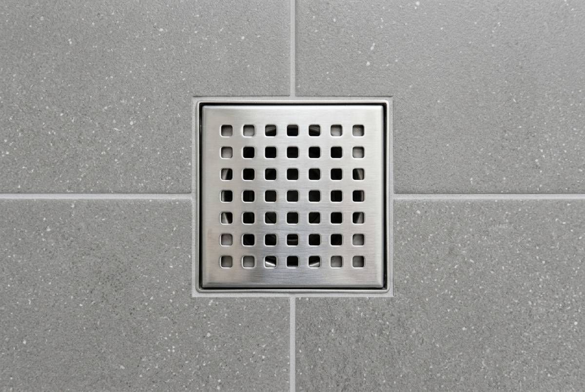
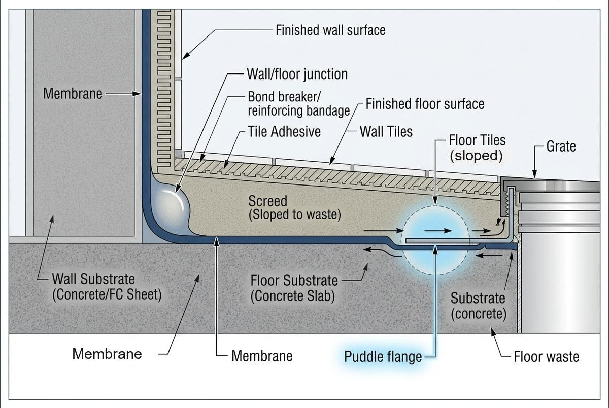

Leaking Shower Repair in Canberra
- Free, no-obligation quotes
- Straight answers on what a job actually needs
- Serving Canberra, the ACT and Queanbeyan

A leaking shower rarely announces itself. By the time you notice a damp patch on the hallway carpet or a musty smell that will not shift, water has usually been moving through the wall or slab for months.
The frustrating part is that most leaking showers get "fixed" more than once. A resealing job that holds for eight months, then the same stain comes back. That happens because the repair treated the surface when the problem was underneath it.
This page covers how to tell where your shower is actually leaking from, which repairs hold and which ones buy you a year at best, and what to expect from the process.
Signs your shower is leaking
Some are obvious. Most are not.
In the bathroom
- Grout that is discoloured, crumbling, or missing in the shower floor corners
- Silicone that has gone black, hard, or is peeling away from the wall junction
- Tiles that sound hollow when you tap them (called drummy tiles, meaning the tile has debonded from what it was stuck to)
- White chalky deposits on grout or at the base of the wall, which is efflorescence, salt left behind as water passes through masonry
- Water pooling and sitting rather than draining away
Outside the bathroom, and these are the ones that matter
- Swollen or lifting skirting boards on the other side of the shower wall
- Carpet that is damp near the bathroom wall
- Floorboards cupping or lifting in the adjacent room
- Paint bubbling or a stain spreading on the ceiling below an upstairs shower
- A persistent musty smell with no visible source
If you are seeing damage outside the bathroom, the waterproofing membrane has almost certainly failed. Surface repairs will not fix that.
What actually causes a shower to leak
Here is the thing most people are never told: grout is not waterproof. It is porous by design. Water passes through grout, and always has.
What keeps water out of your walls and floor is a waterproofing membrane that sits underneath the tiles, applied to the substrate before tiling starts. In Australia, wet area waterproofing is governed by AS 3740:2021 Waterproofing of Domestic Wet Areas, the current edition.
So when a shower leaks, it is almost always one of these:
1. The membrane has failed or was never installed properly
The most common cause in older homes and in bad renovations. Membranes fail from movement in the building, poor preparation, insufficient coverage at the wall and floor junction, or from simply not being there. As a rough anchor: ARDEX's own liquid membrane range (WPM 002) carries a 10-year manufacturer warranty when installed to specification, which is a reasonable proxy for how long a correctly installed membrane should last — actual service life depends on the specific product and how it was installed.
ARDEX Australia, WPM 002 technical data sheet.
2. Perished silicone at the junctions
Silicone at the wall to floor and wall to wall junctions is a movement joint, not a permanent seal. It is a wear item and it perishes. This is the one genuine case where a cheap fix is the correct fix.
3. A failed floor waste or puddle flange
The puddle flange is the connection between the floor waste and the membrane. If it was not bonded correctly, water tracks straight past the drain and into the slab. Common, hard to see, and cannot be fixed from the surface.
4. Cracked or missing grout
Grout failure by itself does not cause a leak if the membrane below is sound. It does let far more water reach the membrane than intended, which accelerates any weakness that is already there.
5. The shower screen seal
Water escaping past the screen rather than through the shower. Cheapest of all to fix and worth ruling out first.
6. Movement cracking
Buildings move. Slab and frame movement can crack tiles, grout and membranes over time, and it concentrates at junctions and perimeters where a rigid tiled surface has nowhere to absorb it.
Which repair do you actually need
This is where most quotes differ, and where most money gets wasted.
Regrouting and resealing
What it is: Old grout is raked out and replaced, silicone joints are cut out and redone.
When it works: When the membrane underneath is intact and you have caught surface deterioration early. Also the right answer when the only problem is perished silicone.
When it does not: If water is already reaching rooms outside the bathroom, regrouting is cosmetic. You are sealing the top of a system that has failed underneath. Expect it to come back.
Surface applied sealing systems
What it is: A clear or coloured sealer applied over the existing tiles and grout, sometimes marketed as a leaking shower repair with no tile removal. Several of these systems are sold with long warranties.
When it works: As a genuine extension of service life on a shower that is deteriorating but structurally sound.
Floor waste and puddle flange repair

What it is: Localised removal of tiles around the drain, correcting the flange to membrane connection, then rewaterproofing and retiling that area.
When it works: When the leak has been traced specifically to the drain connection and the rest of the membrane is sound. Much less disruptive than a full rebuild.
Full strip out and rewaterproof
What it is: Tiles and screed removed back to the substrate, new membrane applied, new screed and tiles.
When it works: When the membrane has failed. It is the only repair that actually addresses the cause.
The honest version: this is the expensive option and no one wants to hear it. But a full rewaterproof done once costs less than three surface repairs and the water damage that accumulates between them. If two previous repairs have not held, this is why.
What leaking shower repair costs in Canberra
Related reading: Canberra Tiling Cost Guide.
How long does it take
Getting it diagnosed properly
The single most useful thing you can do before agreeing to any repair is get the leak actually located rather than guessed at.
A proper assessment should identify whether water is escaping at the surface or below the membrane, and should tell you which of the causes above applies. A flood test, where the shower base is plugged, filled with water to the height of the upstand and left, is widely used to confirm whether the base actually holds water. Membrane manufacturers' own installation guides commonly specify leaving it for at least 24 hours before checking the level.
Manufacturer flood-testing guidance (e.g. Laticrete, Mapei); not a universal AS 3740 mandate on every job, but standard industry practice.
If a quote arrives without anyone having established where the water is going, it is a guess with a price on it.
Can a leaking shower be fixed without removing the tiles?
Sometimes. If the waterproofing membrane below the tiles is still sound and the problem is deteriorated grout or perished silicone, then yes, a surface repair is the correct fix. If the membrane has failed, no surface treatment will stop it, and applying one can trap moisture in the wall or slab. Which applies to your shower is the question a proper assessment answers.
Why does my shower keep leaking after it was repaired?
Usually because the repair addressed the surface and the failure is underneath. Regrouting a shower with a failed membrane will hold for a while, because new grout slows water down. It does not stop it. If a shower has been repaired twice and leaked twice, the membrane is the likely cause.
Is grout waterproof?
No. Grout is porous and water passes through it. The waterproofing membrane beneath the tiles is what keeps water out of the building. This surprises most people and it explains why regrouting alone often does not solve a leak.
What are drummy tiles and do they mean my shower is leaking?
Drummy tiles sound hollow when tapped, meaning the tile has separated from the surface behind it. It does not prove a leak on its own, but it often means water has been sitting where it should not be, and it is a reason to have the shower looked at.
How do I know if the leak is coming from the shower or from the plumbing?
Plumbing leaks tend to be constant, while shower waterproofing leaks usually worsen after the shower is used and settle in between. That is a useful indicator, not a diagnosis. A flood test distinguishes the two properly.
Does a leaking shower cause damage beyond the bathroom?
Yes, and this is why it is worth acting early. Water tracking into wall frames and under flooring causes timber damage, and persistent damp supports mould growth. The repair cost rises considerably once the damage extends past the bathroom itself.
Get your Canberra shower leak sorted properly
Tell us what you are seeing, where the damp is showing up, and whether the shower has been repaired before. That last detail matters more than most people expect.
Get a Quote